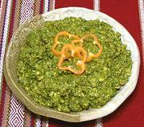

|
Salsa de GuajesMexico - Yucatán - Salsa de Guajes | ||||
| Makes: Effort: Sched: DoAhead: |
3/4 cup *** 40 minutes Yes |
This sauce is made from an unusual bean. Some may think the flavor a bit strange, but it goes very well with fried tortilla chips. See also Salsa de Guaje & Tomate. | |||
|
1 1 2 1-1/2 1/4 1/3 1/4 |
# cl T c t c |
Guaje Beans (1) Chili Habanero (2) Garlic Lime Juice Cilantro Salt Water |
Do Ahead - (20 min - do ahead)
|